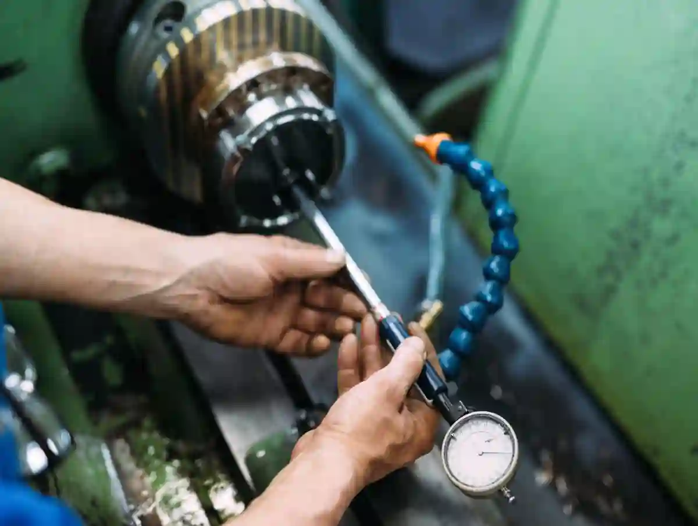
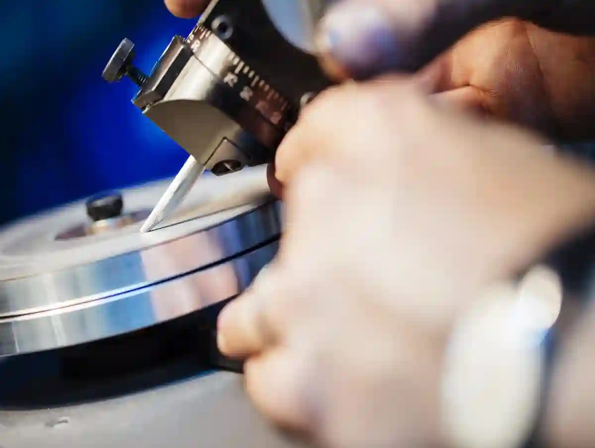

CNC İmalat Kalite Kontrol Satın Alma Sürecini Nasıl Etkiler?
CNC üretim projelerinde satın alma süreci yalnızca fiyat odaklı bir tedarik faaliyeti değildir. Özellikle cnc imalat kalite kontrol altyapısının seviyesi, satın alma kararlarının teknik doğruluğunu, ticari sürdürülebilirliğini ve operasyonel risklerini doğrudan belirler. Kalite kontrolün üretimden bağımsız ele alındığı senaryolarda, teklif aşamasında doğru görünen birçok karar, teslimat sonrası ciddi maliyetlere dönüşebilir.
Bu noktada satın alma ekipleri için kritik soru şudur: Bir tedarikçinin kalite kontrol yetkinliği, teklif edilen birim fiyat kadar neden önemlidir? Çünkü kalite kontrol; tolerans doğruluğu, ölçüm güvenilirliği ve proses stabilitesi gibi unsurlar üzerinden satın alınan parçanın fonksiyonel uygunluğunu garanti altına alır.
CNC imalatta kalite kontrol, üretilen parçaların teknik resim, tolerans ve fonksiyonel gerekliliklere uygunluğunun ölçüm ve doğrulama yöntemleriyle güvence altına alınmasıdır.
Satın Alma Sürecinde Kalite Kontrolün Stratejik Rolü
Satın alma birimleri, CNC üretim projelerinde yalnızca tedarikçi ile fiyat pazarlığı yapan yapılar değildir. Teknik satın alma yaklaşımı, kalite kontrol altyapısını sürecin merkezine alır. cnc imalat kalite kontrol kapasitesi güçlü olan üreticilerle çalışmak, satın alma departmanının risk yönetimini ciddi ölçüde kolaylaştırır.
Kalite kontrol süreçleri zayıf olan tedarikçilerde, ilk numune onayı ile seri üretim arasındaki farklar ciddi sapmalara yol açabilir. Bu durum, özellikle kalite kontrol olmadan üretim yaklaşımının hâkim olduğu yapılarda sıkça görülür. Sonuç olarak satın alma süreci, görünmeyen revizyon maliyetleri ve zaman kayıplarıyla karşı karşıya kalır.
Bu bağlamda satın alma ekiplerinin, teklif değerlendirme aşamasında üreticinin yalnızca makine parkurunu değil, ölçüm ve kontrol altyapısını da detaylı şekilde incelemesi gerekir. Bu inceleme, CNC İmalat Rehberi kapsamında ele alınan teknik satın alma kriterlerinin temelini oluşturur.
Kalite Kontrol Yetkinliği Satın Alma Risklerini Nasıl Azaltır?
Satın alma risklerinin büyük bölümü, üretim sonrası ortaya çıkan kalite problemlerinden kaynaklanır. Ölçüm altyapısı yetersiz olan bir CNC tedarikçisi, tolerans dışı parçaları fark edemeden sevk edebilir. Bu durum, iade süreçleri ve yeniden üretim talepleriyle satın alma bütçesini doğrudan etkiler.
Özellikle tolerans kontrolü cnc projelerinde, mikron seviyesindeki sapmalar bile nihai ürünün fonksiyonunu bozabilir. Bu nedenle satın alma kararları verilirken, üreticinin cnc parça ölçüm süreçleri net biçimde sorgulanmalıdır. Ölçüm kayıtları, raporlama kabiliyeti ve proses içi kontrol adımları, güvenilir tedarikçi seçiminde belirleyici rol oynar.
Bu konuda Türkiye’de ölçüm izlenebilirliği ve metroloji altyapısı için referans alınabilecek resmi kaynaklardan biri, UME – Ulusal Metroloji Enstitüsü – TÜBİTAK UME adresinde yayımlanan TÜBİTAK UME dokümantasyonlarıdır. Bu tür kaynaklar, satın alma ekiplerinin kalite kontrol beklentilerini somut kriterlere dayandırmasını sağlar.
CNC Kalite Kontrol Süreçleri Satın Alma Maliyetlerini Nasıl Etkiler?
Bir CNC parça için teklif edilen fiyat ile toplam sahip olma maliyeti (TCO) arasında çoğu zaman ciddi farklar bulunur. cnc imalat kalite kontrol süreçleri bu farkın temel belirleyicisidir. İlk bakışta düşük fiyatlı görünen bir teklif, yetersiz ölçüm altyapısı nedeniyle uzun vadede daha yüksek maliyetlere neden olabilir.
Kalite kontrol süreçleri güçlü olan üreticilerde, proses içi kontroller sayesinde hatalı üretim oranı düşer. Bu da satın alma sürecinde yeniden sipariş, revizyon ve lojistik maliyetlerini minimize eder. Aksi durumda, ölçüm doğruluğu zayıf olan üretimlerde, parçaların fonksiyonel testlerde elenmesi kaçınılmazdır.
Bu konu, Talaşlı İmalatta Kalite Kontrol Nasıl Yapılır? başlıklı içerikte detaylı şekilde ele alınmaktadır ve satın alma ekipleri için önemli bir referans niteliği taşır.
Ölçüm Altyapısı Satın Alma Kararlarını Nasıl Şekillendirir?

CNC üretim projelerinde satın alma süreci, büyük ölçüde üreticinin ölçüm altyapısına duyulan güven üzerinden ilerler. cnc imalat kalite kontrol kapasitesi yüksek olan firmalar, yalnızca nihai ürün kalitesi değil, satın alma kararlarının doğruluğu açısından da avantaj sağlar. Çünkü ölçüm altyapısı; teklif doğrulama, numune onayı ve seri üretim takibi gibi kritik aşamaların tamamında belirleyici rol oynar.
Satın alma ekipleri açısından ölçüm kabiliyeti, üretim sürecinin şeffaflığını temsil eder. Ölçüm raporları sunabilen, ölçüm izlenebilirliğini belgeleyen ve tolerans doğruluğunu sayısal verilerle kanıtlayabilen tedarikçiler, satın alma risklerini önemli ölçüde azaltır. Bu nedenle cnc parça ölçüm süreçleri, satın alma değerlendirme kriterleri arasında ilk sıralarda yer almalıdır.
CNC parça ölçüm süreçleri, üretilen parçaların teknik resimde belirtilen toleranslara uygunluğunun ölçüm cihazlarıyla doğrulanmasını kapsayan kalite kontrol adımlarıdır.
CMM ve Manuel Ölçüm Sistemlerinin Satın Alma Etkisi
CNC üretimde kullanılan ölçüm sistemleri, satın alma sürecinin teknik güvenilirliğini doğrudan etkiler. Özellikle CMM (Koordinat Ölçüm Makineleri) altyapısına sahip üreticiler, karmaşık geometrilere sahip parçaların ölçümünü yüksek hassasiyetle gerçekleştirebilir. Bu durum, satın alma ekipleri için ölçüm sonuçlarının tartışmaya açık olmamasını sağlar.
Manuel ölçüm ekipmanlarıyla yürütülen kalite kontrollerde ise operatör bağımlılığı ve ölçüm tekrar edilebilirliği önemli bir risk faktörüdür. Bu tür üretimlerde tolerans sapmaları, çoğu zaman seri üretim aşamasında ortaya çıkar. tolerans kontrolü cnc projelerinde bu fark, satın alma sürecinin başarısını doğrudan belirler.
Bu noktada CNC Üretimde Kalite Kontrol Süreçleri içeriğinde ele alınan ölçüm teknolojileri, satın alma ekipleri için önemli bir karşılaştırma rehberi sunar.
Proses İçi Ölçüm Satın Alma Sürecinde Neden Kritik?
Kalite kontrolün yalnızca final aşamada yapılması, satın alma açısından ciddi bir belirsizlik oluşturur. Proses içi ölçüm uygulanmayan üretimlerde, hatalı parçalar ancak üretim tamamlandıktan sonra tespit edilir. Bu durum, yeniden üretim ve termin gecikmeleriyle sonuçlanır.
Proses içi ölçüm sistemleri sayesinde, üretim devam ederken tolerans sapmaları anında fark edilir ve müdahale edilir. Bu yaklaşım, kalite kontrol olmadan üretim riskini ortadan kaldırır. Satın alma ekipleri açısından bu, tedarikçinin süreci kontrol edebildiğinin net bir göstergesidir.
Türkiye’de ölçüm izlenebilirliği ve kalite altyapısına ilişkin resmi referanslar, TSE – Türk Standardları Enstitüsü web sitesinde yayımlanan Türk Standartları Enstitüsü kalite ve ölçüm standartları dokümantasyonlarında açıkça belirtilmektedir. Bu standartlar, satın alma sözleşmelerinde kalite beklentilerinin tanımlanması için güçlü bir dayanak oluşturur.
Ölçüm Cihazları CNC Üretimde Satın Alma Güvenini Nasıl Artırır?
Bir CNC üreticisinin kullandığı ölçüm cihazları cnc altyapısı, satın alma sürecinde güven seviyesini belirleyen temel faktörlerden biridir. Mikrometre, komparatör, yüzey pürüzlülük cihazları ve CMM sistemleri; yalnızca kalite kontrol değil, aynı zamanda teklif doğrulama araçlarıdır.
Satın alma ekipleri, ölçüm cihazlarının kalibrasyon durumunu ve izlenebilirliğini sorgulamalıdır. Kalibrasyon geçmişi belirsiz olan ölçüm ekipmanlarıyla yapılan kontroller, ölçüm sonuçlarının güvenilirliğini zedeler. Bu durum, cnc kalite standartları açısından ciddi bir zafiyet anlamına gelir.
Bu başlık altında ele alınan teknik kriterler, Kalite Kontrol ve Ölçüm sayfasında detaylı şekilde açıklanan ölçüm altyapısı gereklilikleriyle doğrudan ilişkilidir.
CNC Kalite Standartları Satın Alma Süreçlerini Nasıl Yönlendirir?

CNC üretim projelerinde kalite kontrol yalnızca üretim sahasının değil, satın alma sözleşmelerinin de temel bileşenidir. cnc imalat kalite kontrol yaklaşımının belirli standartlara dayanması, satın alma sürecinin teknik ve hukuki olarak güvence altına alınmasını sağlar. Bu noktada kalite standartları, tekliflerin karşılaştırılabilirliğini ve üretim çıktılarının doğrulanabilirliğini mümkün kılar.
Satın alma birimleri açısından cnc kalite standartları, belirsizlikleri minimize eden ortak bir dil oluşturur. ISO 9001 gibi kalite yönetim sistemleri, üreticinin proseslerini dokümante ettiğini ve kontrol altında tuttuğunu gösterir. Ancak standartlara sahip olmak tek başına yeterli değildir; bu standartların ölçüm ve tolerans kontrol süreçlerine fiilen yansıtılması gerekir.
CNC kalite standartları, üretim süreçlerinin belirli kalite kriterleri ve ölçüm gereklilikleri doğrultusunda yönetilmesini sağlayan teknik ve yönetsel referanslardır.
Tolerans Tanımları Satın Alma Tekliflerini Nasıl Etkiler?
Bir CNC parça için verilen teklifin doğruluğu, büyük ölçüde tolerans tanımlarının netliğine bağlıdır. tolerans kontrolü cnc süreçleri doğru tanımlanmadığında, satın alma aşamasında kabul edilen fiyat ile üretim sonrası ortaya çıkan gerçek maliyetler arasında fark oluşur.
Teknik resimlerde açıkça belirtilmeyen veya yanlış yorumlanan toleranslar, üretici ile müşteri arasında kalite anlaşmazlıklarına neden olur. Bu tür durumlarda satın alma ekipleri, kalite kontrol raporlarıyla desteklenmeyen üretimleri reddetmek zorunda kalabilir. Bu da teslim süresi ve proje planlaması açısından ciddi riskler doğurur.
Bu bağlamda toleransların nasıl tanımlanması gerektiği, Talaşlı İmalatta Kalite Kontrol Nasıl Yapılır? içeriğinde detaylı şekilde ele alınmakta ve satın alma ekipleri için teknik bir rehber sunmaktadır.
Yanlış Tolerans Yönetiminin Satın Alma Maliyetlerine Etkisi
Yanlış tolerans yönetimi, CNC üretimde gizli maliyetlerin en önemli kaynaklarından biridir. Gereğinden dar toleranslar, üretim süresini uzatır ve fire oranını artırır. Buna karşılık gereğinden geniş toleranslar, parçanın fonksiyonel uyumsuzluğuna yol açar. Her iki durumda da cnc imalat kalite kontrol süreci zayıflar ve satın alma maliyetleri artar.
Satın alma ekipleri için kritik nokta, tolerans gerekliliklerinin üretim kapasitesiyle uyumlu olup olmadığını değerlendirmektir. Bu değerlendirme yapılmadığında, kalite kontrol olmadan üretim fiilen kabul edilmiş olur. Sonuç olarak revizyon talepleri, ek ölçüm maliyetleri ve yeniden üretim süreçleri kaçınılmaz hale gelir.
Türkiye’de tolerans ve ölçüm standartlarına ilişkin teknik çerçeve, TSE – Türk Standardları Enstitüsü adresinde yayımlanan genel tolerans standartları dokümanlarında açıklanmaktadır. Bu tür resmi kaynaklar, satın alma sözleşmelerinde tolerans beklentilerinin netleştirilmesi açısından önemlidir.
Kalite Kontrol Olmadan Üretim Satın Alma Sürecinde Neden Risklidir?
Kalite kontrol olmadan üretim, kısa vadede düşük maliyetli gibi görünse de satın alma açısından yüksek risk barındırır. Ölçüm ve kontrol adımları atlanan üretimlerde, hatalı parçalar genellikle montaj veya saha kullanımında ortaya çıkar. Bu aşamada oluşan problemler, satın alma departmanının kontrol alanı dışında gerçekleşir.
Satın alma ekipleri, kalite kontrol altyapısı olmayan tedarikçilerle çalıştığında, iade ve yeniden üretim süreçlerini yönetmek zorunda kalır. Bu durum yalnızca maliyet artışına değil, aynı zamanda tedarikçi ilişkilerinin zedelenmesine de yol açar. Bu nedenle kalite kontrol, satın alma sürecinin ayrılmaz bir parçası olarak ele alınmalıdır.
Bu yaklaşım, CNC Üretimde Kalite Kontrol Süreçleri içeriğinde vurgulanan teknik satın alma stratejileriyle doğrudan örtüşmektedir.
Tedarikçi Seçiminde CNC Kalite Kontrol Neden Belirleyicidir?
CNC üretim projelerinde doğru tedarikçi seçimi, satın alma sürecinin başarısını doğrudan etkiler. Bu seçimde yalnızca makine parkuru, üretim kapasitesi veya teklif fiyatı değil, cnc imalat kalite kontrol altyapısının seviyesi de kritik bir değerlendirme kriteridir. Kalite kontrol kabiliyeti düşük olan tedarikçiler, satın alma sürecinde öngörülemeyen riskler yaratır.
Satın alma ekipleri için güvenilir tedarikçi; ölçüm yapabilen, ölçüm sonuçlarını raporlayabilen ve bu raporları teknik gerekçelerle savunabilen üreticidir. Bu noktada cnc parça ölçüm süreçleri yalnızca üretim sonrası değil, teklif ve numune onayı aşamalarında da aktif rol oynar.
Tedarikçi değerlendirme kriterlerinin nasıl yapılandırılması gerektiği, CNC İmalat Rehberi kapsamında ele alınan teknik satın alma yaklaşımlarıyla doğrudan ilişkilidir.
Ölçüm Raporları Satın Alma Onay Sürecini Nasıl Etkiler?
Ölçüm raporları, satın alma onay sürecinin teknik dayanağını oluşturur. Bir CNC tedarikçisinin sunduğu ölçüm raporu; parçanın teknik resme, toleranslara ve fonksiyonel gerekliliklere uygunluğunu belgeleyen resmi bir çıktıdır. Bu nedenle cnc imalat kalite kontrol süreci, raporlama yetkinliği olmadan eksik kalır.
Satın alma ekipleri açısından ölçüm raporları, teslim alınan parçaların kabul kriterlerini netleştirir. Ölçüm sonuçları sayısal ve izlenebilir olduğunda, kalite kabul süreci hızlanır ve tartışmasız hale gelir. Aksi durumda, subjektif değerlendirmeler ve tekrar ölçümler kaçınılmaz olur.
Bu kapsamda ölçüm raporlarının nasıl yorumlanması gerektiği, Kalite Kontrol ve Ölçüm sayfasında detaylı biçimde açıklanmaktadır.
Numune Onayı ve Seri Üretim Arasında Kalite Kontrol Bağlantısı
Numune onayı, satın alma sürecinde kritik bir eşiktir. Ancak yalnızca numunenin uygun bulunması, seri üretimde aynı kalite seviyesinin korunacağı anlamına gelmez. Bu noktada tolerans kontrolü cnc süreçlerinin sürekliliği devreye girer.
Proses içi ölçüm ve periyodik kontrol adımları uygulanmayan üretimlerde, seri üretimde kalite sapmaları sıklıkla görülür. Satın alma ekipleri açısından bu durum, teslimat sonrası kalite sorunlarıyla karşılaşma riskini artırır. Bu nedenle numune onayıyla birlikte kalite kontrol planının da talep edilmesi gerekir.
Türkiye’de kalite kontrol dokümantasyonu ve ölçüm raporlamasına ilişkin uygulamalar, TSE – Türk Standardları Enstitüsü adresinde yayımlanan kalite belgelendirme rehberlerinde açıklanmaktadır. Bu tür resmi kaynaklar, satın alma süreçlerinde kalite beklentilerinin yazılı hale getirilmesi için önemli referanslar sunar.
Güvenilir CNC Tedarikçisi Satın Alma Sürecinde Nasıl Ayırt Edilir?
Güvenilir bir CNC tedarikçisi, yalnızca üretim yapabilen değil, ürettiğini ölçebilen ve belgeleyebilen firmadır. cnc kalite standartları çerçevesinde çalışan üreticiler, satın alma ekiplerine şeffaf ve izlenebilir süreçler sunar.
Bu tür tedarikçilerde kalite kontrol, üretimin son adımı değil, üretim sürecinin ayrılmaz bir parçasıdır. Ölçüm cihazlarının kalibrasyon kayıtları, proses içi kontrol planları ve ölçüm raporları, satın alma ekipleri için güven unsuru oluşturur. Bu yaklaşım, kalite kontrol olmadan üretim riskini ortadan kaldırır.
Bu değerlendirme kriterleri, CNC Üretimde Kalite Kontrol Süreçleri içeriğinde ele alınan tedarikçi seçimi stratejileriyle birebir örtüşmektedir.
CNC İmalatta Kalite Kontrol Satın Alma Sürecini Neden Doğrudan Etkiler?
CNC üretim projelerinde satın alma süreci, yalnızca tedarikçi seçimi ve fiyat onayından ibaret değildir. Sürecin gerçek başarısı, teslim alınan parçaların teknik gereklilikleri eksiksiz karşılamasıyla ölçülür. Bu noktada cnc imalat kalite kontrol, satın alma kararlarının görünmeyen ancak en belirleyici bileşenidir.
Kalite kontrol altyapısı güçlü olmayan üreticilerle yapılan satın almalarda; revizyon, iade ve yeniden üretim gibi süreçler kaçınılmaz hale gelir. Bu durum, satın alma ekiplerinin planladığı bütçe ve zaman çizelgesinin dışına çıkmasına neden olur. Buna karşılık ölçüm ve kontrol süreçleri sistematik olan üreticilerde, satın alma süreci öngörülebilir ve sürdürülebilir hale gelir.
CNC imalatta kalite kontrol, satın alma sürecinde maliyet, teslim süresi ve teknik riskleri doğrudan etkileyen kritik bir karar kriteridir.
Uzun Vadeli Satın Alma Stratejilerinde Kalite Kontrolün Rolü
Kısa vadeli satın alma kararları genellikle birim fiyat odaklı alınır. Ancak uzun vadede başarılı olan satın alma stratejileri, kalite kontrol yetkinliğini merkeze koyar. CNC parça ölçüm süreçleri ve tolerans yönetimi güçlü olan tedarikçilerle çalışmak, toplam sahip olma maliyetini düşürür.
Bu yaklaşım, satın alma ekiplerinin tedarikçi performansını objektif kriterlerle değerlendirmesine olanak tanır. Ölçüm raporları, proses içi kontrol kayıtları ve kalite dokümantasyonu; tedarikçi performansının sayısal verilerle izlenmesini sağlar. Bu da cnc kalite standartları ile uyumlu, sürdürülebilir bir satın alma yapısı oluşturur.
Uzun vadede kalite kontrolü satın alma stratejisinin parçası haline getirmeyen firmalar, kalite kontrol olmadan üretim riskini sürekli olarak taşır. Bu risk, özellikle seri üretim ve kritik tolerans gerektiren parçalarda ciddi operasyonel sorunlara yol açar.
Satın Alma Süreçlerinde Teknik ve Ticari Dengenin Kurulması
Başarılı bir satın alma süreci, teknik gereklilikler ile ticari beklentiler arasında denge kurabilen yapılarda mümkündür. tolerans kontrolü cnc süreçlerinin doğru tanımlanması, bu dengenin kurulmasında kilit rol oynar. Gereğinden dar toleranslar maliyeti artırırken, geniş toleranslar fonksiyonel riskler doğurur.
Bu nedenle satın alma ekipleri, kalite kontrol altyapısını değerlendirmeden verilen fiyat tekliflerini nihai karar olarak görmemelidir. Ölçüm kabiliyeti, raporlama yetkinliği ve kalite standartlarına uyum; teklif değerlendirme sürecinin ayrılmaz parçalarıdır. Bu yaklaşım, Kalite Kontrol ve Ölçüm perspektifinin satın alma süreçlerine entegre edilmesini sağlar.
Satın Alma Süreçlerinde Kalite Kontrolün Karar Mekanizmasına Etkisi
CNC projelerinde satın alma kararları yalnızca fiyat ve teslim süresi üzerinden şekillendirilmemelidir. CNC imalat kalite kontrol altyapısı, bu kararların teknik doğruluğunu ve uzun vadeli sürdürülebilirliğini belirleyen temel faktörlerden biridir. Ölçüm kabiliyeti, tolerans yönetimi ve raporlama disiplini güçlü olmayan tedarikçilerle çalışmak, satın alma sürecinde görünmeyen riskler yaratır. Buna karşılık cnc parça ölçüm süreçleri net tanımlanmış ve cnc kalite standartları ile uyumlu üretim yapan firmalar, satın alma ekiplerine öngörülebilirlik sağlar. Bu nedenle kalite kontrol, satın alma karar mekanizmasının ayrılmaz bir parçası olarak ele alınmalıdır.
Genel Değerlendirme ve Sonuç
CNC üretim projelerinde satın alma sürecinin başarısı, kalite kontrol yaklaşımının ne kadar erken ve ne kadar doğru konumlandırıldığıyla doğrudan ilişkilidir. CNC imalat kalite kontrol, yalnızca üretim sonrası bir kontrol mekanizması değil; satın alma kararlarını yönlendiren stratejik bir unsurdur.
Ölçüm altyapısı güçlü, tolerans yönetimi net ve kalite standartlarına uygun çalışan tedarikçilerle yürütülen satın alma süreçleri; düşük risk, öngörülebilir maliyet ve sürdürülebilir iş ilişkileri sağlar. Buna karşılık kalite kontrolün göz ardı edildiği satın alma kararları, kısa vadede avantajlı gibi görünse bile uzun vadede ciddi kayıplara yol açar.
Bu nedenle CNC imalat projelerinde satın alma ekiplerinin, kalite kontrolü karar alma sürecinin merkezine yerleştirmesi; hem teknik başarı hem de ticari sürdürülebilirlik açısından vazgeçilmezdir.